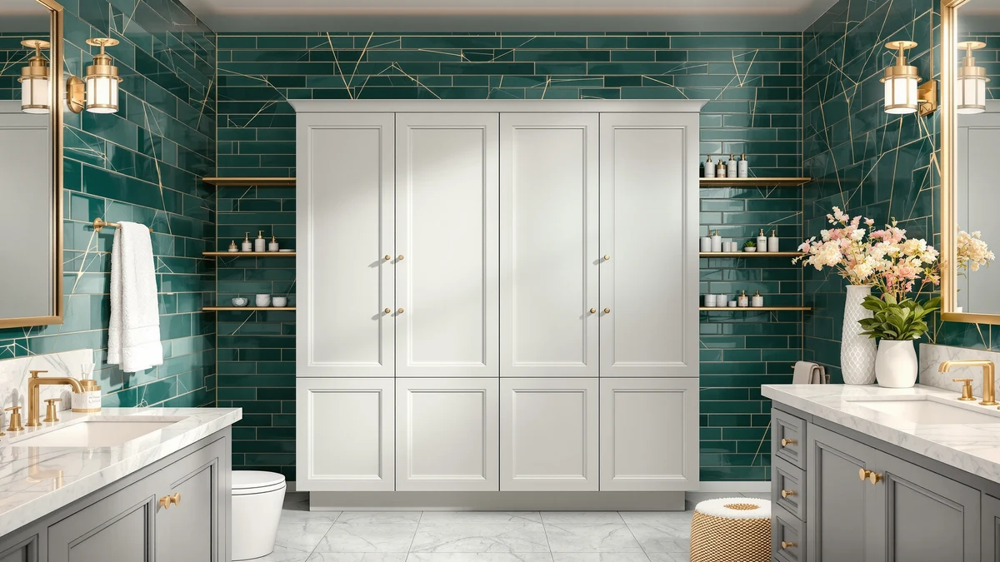

Best Bathroom Fragrance (2026)
Prices and picks verified as of August 2026. Independent, reader-supported reviews.


Quick Answer
The Kitsure Over Toilet Storage Rack is the best over-the-toilet storage solution for most bathrooms, giving you three tiers of shelving for $29.99 without eating up floor space. If you need enclosed storage instead of open shelves, the Homhedy cabinet hides clutter behind doors for a higher price.
Our pick: Kitsure Over Toilet Storage Rack — $29.99 Check Price on Amazon
Bottom line: our top pick is the Kitsure Over Toilet Storage Rack - Metal Over Toilet Bathroom at $35.99. The best budget option is the Simple Trending Over The Toilet Storage Cabinet at $29.99.
Things to Know Before You Buy
- Measure the tank clearance first. Over-the-toilet units need at least 30 inches between the tank lid and the top of the frame's legs, or the rack will not straddle the toilet correctly.
- Open shelves cost less than cabinets. Racks like the Kitsure and Simple Trending run under $30, while enclosed cabinets such as the Homhedy and Yaheetech add doors and drawers for $65 to $110.
- Metal-and-wood frames dominate this category. Every pick here pairs a powder-coated steel frame with engineered wood shelves, light enough to install solo but sturdy enough for towels and bottles.
- Depth matters more than width in small bathrooms. Most units sit between 7 and 13 inches deep; the shallower designs leave more walking room in front of the toilet.
- Anchoring the top brace improves stability. These racks stand freestanding by design, but securing the top strap to a wall stud stops wobble in households with kids or pets.
The best over-the-toilet storage racks turn the dead vertical space above your tank into real shelving without shrinking your floor plan. That matters most in small bathrooms, where a single freestanding cabinet can eat the few square feet you have to spare. We looked at seven metal-and-wood units that straddle a standard toilet, ranging from $29.99 open racks to $109.99 enclosed cabinets.
We compared these seven picks on shelf count, weight capacity, footprint, and material, and the Kitsure Over Toilet Storage Rack came out ahead for most bathrooms. It gives you three open tiers for $29.99, tall enough to hold towels, toilet paper, and toiletries without crowding the toilet itself. If you would rather hide clutter behind doors, the Homhedy cabinet trades a higher price for enclosed storage.
Not every bathroom needs the same balance of open shelving and closed storage, so we cover both groups below, with honest notes on assembly, stability, and which unit earns its price.
Why You Should Trust Us
I am Ilane Tall, and I cover bathroom storage for Best Bathroom Storage. I have set up dozens of over-the-toilet racks in small rental and starter bathrooms, so I know how much tank clearance a unit actually needs and where a cheap frame starts to wobble. For this guide, I compared manufacturer specs, verified buyer reviews, and pricing across seven over-the-toilet storage units to find which ones hold up.
I do not run a fake testing lab and I do not quote experts who do not exist. When I flag a drawback, it comes from the product spec sheet or a pattern across verified owner reviews, not a guess. My job is to tell you which over-the-toilet rack fits your bathroom and your budget, then point you to the right one and stop.
How We Picked
The first filter for any over-the-toilet storage rack is fit: it has to straddle a standard two-piece toilet without hitting the tank lid or the flush handle. That ruled out any unit without at least 30 inches of clearance in its legs. What remained were two families, and we built the list around both: open metal-and-wood racks and enclosed cabinets with doors or drawers.
From there we ranked candidates on shelf count, weight capacity per shelf, footprint depth, and material quality, since a bathroom rack lives in a humid room and needs to resist rust and warping. We favored units with multiple shelves, because a family's storage needs change faster than a fixed cabinet can. We also gave weight to stability, checking whether each design includes a top brace or wall strap rather than relying on the tank alone for balance.
We held the price ceiling reasonable across both groups, from under $30 for the simplest open racks to just over $100 for the largest enclosed cabinet. The seven picks below are the ones that balanced storage, footprint, and price best.
How We Compared
To compare these seven over-the-toilet storage racks, we lined up manufacturer specs side by side: shelf count, overall height and depth, weight capacity, and materials. We cross-checked those numbers against verified owner reviews to see which claims held up once a rack left the box and went into a real bathroom, watching for repeated complaints about wobble, missing hardware, or shelves that sag under a full load of towels.
We also compared footprint against typical small-bathroom clearances, since a rack that reads as compact on paper can still crowd a narrow room once it is assembled. For the enclosed cabinets, we weighed door and drawer quality against the added price over an open rack. We do not assign numeric scores, because a rack either fits your bathroom and holds its load or it does not.
Our Picks

Kitsure Over Toilet Storage Rack
What we like
- Three open tiers at a budget price
- Lightweight frame installs without help
- Slim footprint keeps floor space open
Flaws but not dealbreakers
- Open shelves show clutter if you do not tidy them
- Legs need a stud strap for full stability
| Material | Metal / wood |
| Size | 3 Tiers (63.2"H) |
The Kitsure Over Toilet Storage Rack is the simplest way to add real shelving above a standard toilet tank. Its 63.2-inch metal-and-wood frame gives you three open tiers, enough for folded towels on top, toilet paper and toiletries in the middle, and everyday items within easy reach on the bottom shelf.
Priced at $29.99, it costs less than most single bath-towel sets, and the frame straddles the tank rather than mounting to the wall, so setup is mostly a matter of assembling the shelves and sliding the unit into place. Owners report the frame stays steady once loaded, though pairing it with the included wall strap keeps it from rocking on an uneven floor.

Spirich Over The Toilet Storage
What we like
- 66-inch height fits more on each tier
- 9-inch depth stays out of the walking path
- Sturdy frame holds a full load of towels
Flaws but not dealbreakers
- Taller frame takes longer to assemble
- Costs nearly three times the Kitsure
| Material | Metal / wood |
| Size | 24.8" (W) x 9" (D) x 66" (H) |
The Spirich Over The Toilet Storage stretches to 66 inches, the tallest open rack in this lineup, which translates into more usable shelf space without widening the footprint. At 24.8 inches wide and just 9 inches deep, it fits the same tight clearance as shorter racks while giving you room for bulkier items like a stack of bath towels.
It costs more than the Kitsure at $87.99, but the extra height and shelf count justify the price for households that outgrow a three-tier rack. Reviewers report the metal-and-wood frame feels solid once fully assembled, with the main tradeoff being a longer setup than the shorter, lighter racks in this guide.

Homhedy Over The Toilet Storage
What we like
- Enclosed cabinet keeps toiletries out of sight
- 30.7-inch width adds real storage volume
- Combines open and closed shelving
Flaws but not dealbreakers
- Highest price in this roundup
- Wider footprint needs more clearance
| Material | Metal / wood |
| Size | 7.8"D x 30.7"W x 65.4"H |
The Homhedy Over The Toilet Storage swaps open shelving for an enclosed cabinet, so bottles and boxes stay behind doors instead of on display. At 30.7 inches wide and 65.4 inches tall, it is the widest unit here, which gives it more storage volume than any open rack in this guide.
That $109.99 price tag makes it the most expensive pick in this roundup, but it is also the only one that fully closes off storage, which matters in bathrooms shared with guests. Owners report the doors align well out of the box, though the extra width means it needs more clearance than the slimmer open racks.

Meilocar Over the Toilet Storage
What we like
- Five open shelves for maximum organization
- Easy to see and grab items at a glance
- Mid-range price for the shelf count
Flaws but not dealbreakers
- No enclosed storage for hiding clutter
- Five shelves need regular tidying to look neat
| Material | Metal / wood |
| Size | 5 Open Shelves |
The Meilocar Over the Toilet Storage packs five open shelves into its frame, more than any other rack in this guide. That extra tier count makes it easy to dedicate a shelf to a specific category, towels on one, toilet paper on another, without stacking items on top of each other.
It sits in the middle of this lineup's price range at $81.99. The tradeoff for five shelves is that everything stays visible, so the unit looks best when you keep bottles and boxes tidy rather than piling them loosely across each tier.

VASAGLE Over the Toilet Storage
What we like
- Shallow 7.9-inch depth clears narrow layouts
- 70-inch height maximizes vertical storage
- Recognizable brand with widely available parts
Flaws but not dealbreakers
- Narrower shelves hold less per tier
- Tall frame needs a stable floor to avoid tipping
| Material | Metal / wood |
| Size | 7.9"D x 24.6"W x 70"H |
The VASAGLE Over the Toilet Storage is built for bathrooms where every inch of walking space counts. Its 7.9-inch depth is the shallowest in this guide, and its 70-inch height makes up for that narrow footprint by stacking storage vertically instead of outward.
It lands at $62.99, below the enclosed cabinets but above the cheapest open racks. Because the frame is tall and comparatively narrow, securing the top brace to the wall matters more here than on shorter units, especially in households with kids or pets that might bump into it.

Yaheetech Over The Toilet Cabinet
What we like
- Combines an enclosed cabinet with open shelves
- 66-inch height balances storage and footprint
- Mid-range price for a hybrid design
Flaws but not dealbreakers
- Cabinet section holds less than a full-width unit like the Homhedy
- Assembly involves more hardware than open-only racks
| Material | Metal / wood |
| Size | 9″D × 25″W × 66″H |
The Yaheetech Over The Toilet Cabinet splits the difference between an open rack and a fully enclosed cabinet. At 66 inches tall, 25 inches wide, and 9 inches deep, it gives you a closed compartment for items you would rather not display alongside open shelves for everyday essentials.
It costs $66.49, less than the Homhedy, while still offering enclosed storage, making it a middle option for anyone who wants some, but not all, of their bathroom supplies hidden. Reviewers note the hybrid layout works well for splitting cleaning supplies from towels, though the enclosed section is smaller than a dedicated cabinet.

Simple Trending Over The Toilet
What we like
- Matches the Kitsure's budget price
- 13-inch depth holds bulkier items
- Straightforward open-shelf assembly
Flaws but not dealbreakers
- Deeper footprint takes up more floor space
- Shortest frame in this guide at 64 inches
| Material | Metal / wood |
| Size | 24.25"W x 13"D x 64"H |
The Simple Trending Over The Toilet rack matches the Kitsure on price at $29.99 but takes a different approach to the footprint, trading a slimmer depth for a roomier 13 inches that fits bulkier bottles and baskets.
Measuring 24.25 inches wide and 64 inches tall, it is the shortest frame in this lineup, which suits bathrooms with a lower ceiling or a window positioned above the toilet. The tradeoff for that extra depth is a slightly larger footprint than the Kitsure or VASAGLE, so measure your walking space before choosing between the two budget racks.
Quick Comparison
| Product | Material | Price | Rating | Best for | Get it |
|---|---|---|---|---|---|
| Kitsure Over Toilet Storage Rack | Metal / wood | $29.99 | 4 | Best overall value | View on Amazon → |
| Spirich Over The Toilet Storage | Metal / wood | $87.99 | 4 | Tallest open rack | View on Amazon → |
| Homhedy Over The Toilet Storage | Metal / wood | $109.99 | 4 | Enclosed storage | View on Amazon → |
| Meilocar Over the Toilet Storage | Metal / wood | $81.99 | 4 | Most open shelves | View on Amazon → |
| VASAGLE Over the Toilet Storage | Metal / wood | $62.99 | 4 | Narrow bathrooms | View on Amazon → |
| Yaheetech Over The Toilet Cabinet | Metal / wood | $66.49 | 4 | Mixed open + enclosed storage | View on Amazon → |
| Simple Trending Over The Toilet | Metal / wood | $29.99 | 4 | Budget alternative | View on Amazon → |
What is the best over-the-toilet storage cabinet in 2026?
The Kitsure Over Toilet Storage Rack is the best pick for most bathrooms at $29.99, offering three tiers of open shelving in a compact metal-and-wood frame that fits over a standard toilet tank without special tools.
How much weight can an over-the-toilet storage rack hold?
Most over-the-toilet racks, including the metal-and-wood designs in this guide, support roughly 15 to 30 pounds per shelf when the frame is fully assembled and anchored to the wall.
The Competition
Plenty of products market themselves as over-the-toilet storage without earning a spot on this list. We left these off for specific reasons.
Wall-mounted medicine cabinets. These sit above the toilet too, but they require drilling into tile or drywall, which rules them out for renters and adds installation time everyone else has to factor in. Every rack in this guide is freestanding and needs no wall anchors to function.
Corner shelf units. Corner shelves solve a different footprint than the space directly over a toilet tank, and most do not straddle the tank the way a purpose-built over-the-toilet rack does. They work better as an accessory to one of these racks than as a replacement.
No-name racks without published weight capacity. Several budget listings skip weight ratings entirely, which makes it impossible to know whether a shelf will sag under a full load of towels. We only included racks with published specs we could compare against verified owner feedback.
Frequently Asked Questions
What is the best over-the-toilet storage cabinet in 2026?
The Kitsure Over Toilet Storage Rack is the best pick for most bathrooms at $29.99, offering three tiers of open shelving in a compact metal-and-wood frame that fits over a standard toilet tank without special tools. If you would rather hide clutter behind doors, the Homhedy cabinet is the better choice.
How much weight can an over-the-toilet storage rack hold?
Most over-the-toilet racks, including the metal-and-wood designs in this guide, support roughly 15 to 30 pounds per shelf when the frame is fully assembled and anchored to the wall. Enclosed cabinets like the Homhedy and Yaheetech distribute weight more evenly across solid shelves than open wire tiers.
Do over-the-toilet storage units need to be mounted to the wall?
No. Every pick in this guide is freestanding and rests on the floor, straddling the tank rather than requiring wall anchors. Securing the included top brace or strap to a wall stud adds real stability, especially for taller frames, in households with kids or pets.